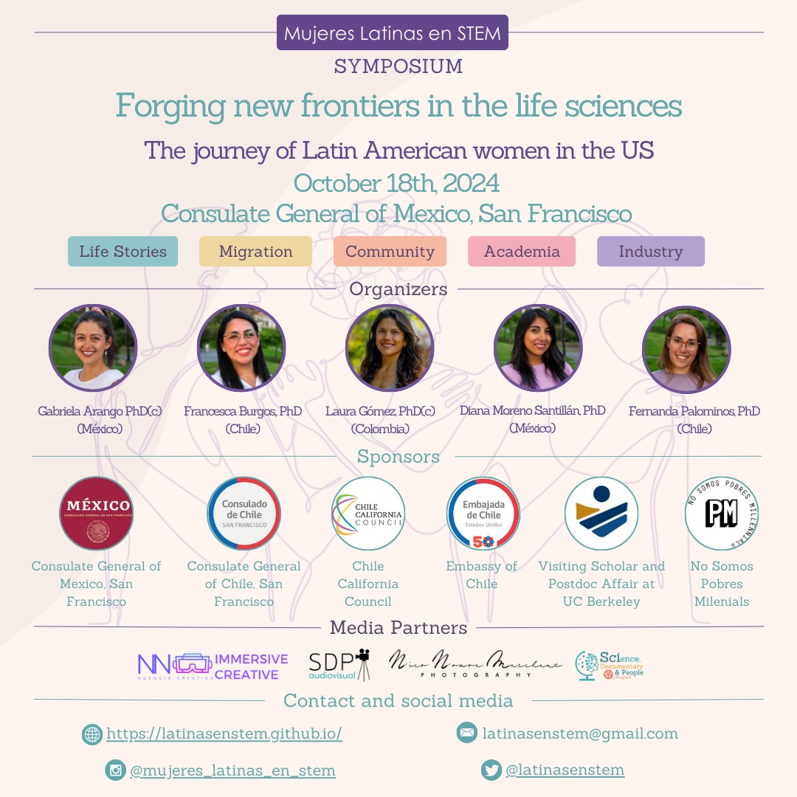

1er simposio Latinas en STEM residiendo en EE.UU.
Realizamos nuestro primer encuentro presencial, totalmente gratuito, este pasado viernes 18 de Octubre de 2024, en el Consulado General de México en San Francisco.
DESCARGA EL PROGRAMA COMPLETO DE NUESTRO PRIMER SIMPOSIO
Más de 50 mujeres latinas en STEM asistieron al simposio de manera presencial, mientras que otras 20 asistieron de manera virtual, desde distintas partes del mundo. Estamos muy contentas del recibimiento de nuestra organización, y estamos agradecidas del gran encuentro que tuvimos. La contribución de cada una de Uds. -como también de nuestros patrocinadores y media partners- fue clave para el éxito de este encuentro. Gracias por ayudarnos a construir un espacio de aprendizaje, colaboración mutua, y motivación.
REVISA AQUÍ LAS FOTOS DE NUESTRO PRIMER ENCUENTRO
Las invitadas magistrales a nuestro simposio fueron:
Dr. Lúcia G. Lohmann, botanista brasileña, elegida como miembro de la American Academy of Arts & Sciences desde 2021, fue profesora en el
Dpto. de Botánica de la Universidad de São Paulo desde 2004, y desde 2024, Profesora del Departamento de Biología Integrativa de UC Berkeley, y
Directora del University y Jepsom Herbarium de UC Berkeley. Los logros de Lúcia son incontables, tanto en Latinoamérica como en Estados Unidos. Su investigación integra taxonomía,
sistemática molecular, ecología, biogeografía, y evolución de plantas neotropicales.
Dr. Daiana Andrea Capdevilla, química argentina, galardoneada con la beca L'Oréal-UNESCO "Mujeres en la Ciencia" por sus estudios
revolucionarios acerca de la contaminación de aguas. Daiana hizo su investigación postdoctoral en Northwestern University, EE.UU.,
y actualmente es investigadora principal en la Fundación Instituto Leloir.
Dr. Kelly M. Cautivo, inmunóloga chilena, fue investigadora
Postdoctoral en la University of California, San Francisco, en EE.UU., pero gracias a su trabajo innovador en la regulación de la inflamación
por interferon gamma y linfocitos, es hoy en día investigadora en la compañía biofarmaceútica Gilead Sciences, en Foster City, California.
Dr. N. Cecilia Martínez-Gomez, microbióloga mexicana, es actualmente Profesora Asociada de la Universtiy of California, Berkeley, en el
Departamento de Plant and Microbial Biology. La investigación de Ceci tiene como objetivo impulsar plataformas bacterianas para mejorar
las industrias agrícolas y energéticas, enfocándose en la biorremediación, biolixiviación, y el reciclaje de residuos electrónicos.
También contamos con la participación de las panelistas: Dr. Estefanía Sánchez-Vasquez, bióloga del desarrollo peruana, que investiga modelos de desarrollo humano temprano; Dr.(c) y Ms. Valeria Ramírez-Castañeda, bióloga evolutiva y herpetóloga, cuya investigación está enfocada en la conservación de la herpetofauna y su relación con comunidades amazónicas; y la Dr.(c) y Ms. M. Gabriela Mendoza, Ingeniera mecánica ecuatoriana, especialista en industria aeroespacial.